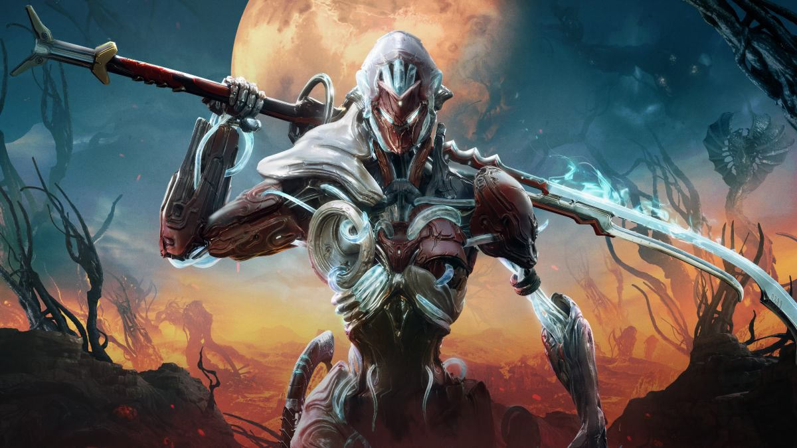
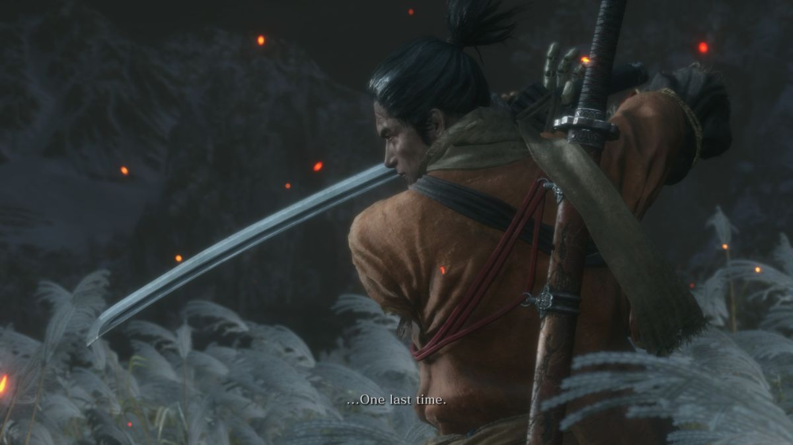
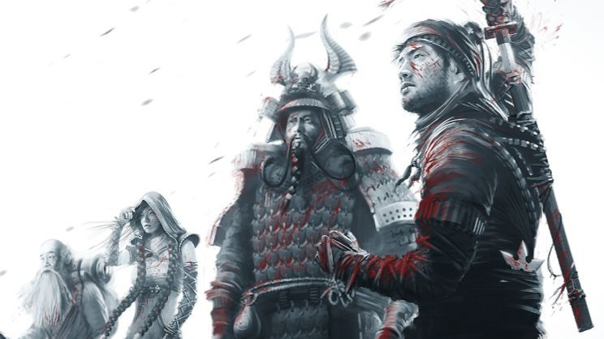
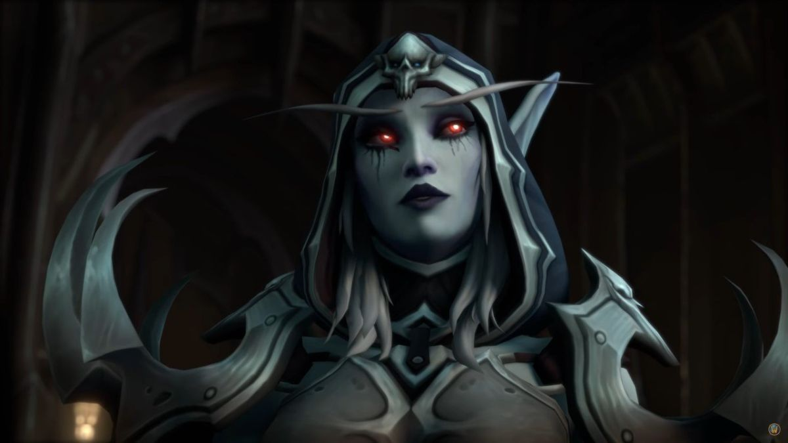
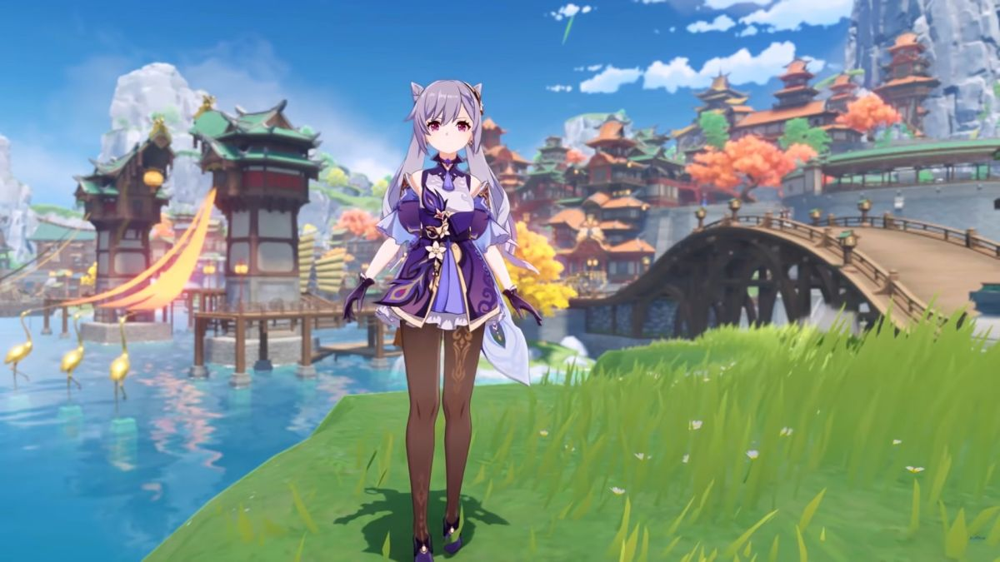

Every year, the global PC Gamer team gets together to decide the top 100 PC games. The process is simple: we take last year's list, propose a bunch of additions, tweaks and removals, and then hold a series of hours-long discussions going step-by-step through every suggestion. Sometimes there is shouting.
There are a few guiding principles that we stick to when we put this list together. For example, we're always clear that this isn't a ranking of the greatest—or most important(opens in new tab)—PC games of all time, but rather the best PC games to play right now. It's a reflection of all the brilliant experiences the industry has to offer in 2021, a yearly, admittedly multi-thousand-word, snapshot. Yes, that includes some retro classics that hold up nicely, but it also means celebrating the impact of bold new releases. We also prefer to highlight the breadth and variety of the platform, and so we've limited ourselves to one game per series.
There are a few guiding principles that we stick to when we put this list together. For example, we're always clear that this isn't a ranking of the greatest—or most important(opens in new tab)—PC games of all time, but rather the best PC games to play right now. It's a reflection of all the brilliant experiences the industry has to offer in 2021, a yearly, admittedly multi-thousand-word, snapshot. Yes, that includes some retro classics that hold up nicely, but it also means celebrating the impact of bold new releases. We also prefer to highlight the breadth and variety of the platform, and so we've limited ourselves to one game per series.
Top 5 games
Warframe
Released March 25
Steven: Warframe has had some ups and downs over the last year, but it's still an innovative, strange, and absorbing MMO shooter unlike anything else on the PC. No other game comes close to doing what Warframe does—especially now that it has ship-to-ship space combat and a Shadow of Mordor-style Nemesis System. The amount of stuff to do in Warframe is positively mind-boggling. And with a major story expansion coming later this year, there's never been a better time to start playing.
Fraser: I'm immediately lost whenever I return to Warframe, but the way it reinvents itself and keeps adding unexpected new features always keeps me coming back. I've not had a chance to grow bored of it yet.
Sekiro: Shadows Die Twice
Released March 21, 2019
Wes: I don't want to start a debate about game difficulty, but overcoming Sekiro's challenge was a thrill I haven't gotten from an action game since God Hand. It demands you play on its terms. Without the flexibility of Dark Souls' RPG systems, you simply have to master the blade. The moment you parry a boss's final hit and counter with a deathblow you'll realize you've felt dead inside for years.
James: I prefer From's RPGs, but nothing's gonna best Sekiro's take on sword combat for a long time.
Morgan: Come on James, Chivalry 2 is right over there. Sekiro is hands-down my favorite From game yet. By reining in its combat options and focusing on a single weapon, they ended up with combat so good that Star Wars copied it.
Sekiro: Shadows Die Twice
Released December 6, 2016
Fraser: Desperados 3 is the newest tactics game from Mimimi Games, but 2016's Shadow Tactics remains my favourite thanks to the Edo setting and charismatic cast. It looks stunning, much more so than the Wild West, and by the end you won't want to say goodbye to your band of killer pals. And beyond that, it's still a superb, sneaky tactics game that encourages creativity, experimentation and, of course, save scumming. Bonus points for letting us use an adorable tanuki for murder.
Morgan: I was super jazzed about the first two hours of Shadow Tactics, but then it got very hard and I tossed it in the bin. Tactical stealth movement works really great and I loved the gadgets, but I kind of wish it was turn-based like Invisible, Inc.
Phil: Let's not revisit the real-time vs turn-based argument again—there's too much list left for us to start fighting now. For what it's worth, though, I think the Shadow Mode—which lets you pause the action to plan and synchronise your squad's next move—offers a nice middle ground.
World of Warcraft
Released November 23, 2004
Sarah: I'll always love World of Warcraft but I've struggled with motivation to log in since the launch of Shadowlands. We went from being ridiculously overpowered in BFA to power systems that feel like they were tacked on as an afterthought. I'm still there and still raiding, but even that feels more like a chore the further into the expansion we go.
Steven: World of Warcraft is still such an influential game, but yeah, it feels like it's in the midst of a serious identity crisis. If you've never played it, it's still an enormous and enjoyable experience, but my god is Shadowlands starting to feel like a big disappointment. At least WoW Classic is trucking along just fine (assuming you're not into PvP).
Fraser: I've finally managed to get WoW out of my system. It just took 15 years. It's one of the most important games ever made, and it's exceptional that it remains not only alive but massively popular after such a long time, but I think I've put enough time into it now. And frankly I'm not sure I can really separate it from what we now know about Blizzard, and what a terrible work environment management has fostered.
Phil: Thanks to magazine lead times, this list was locked down in early Summer, before the California Department of Fair Employment and Housing filed a lawsuit against Activision Blizzard alleging discrimination and sexual harrasment. Even before that, it only just about managed to hang on—the team increasingly down on Blizzard's direction for the game. If we were to make this right now, I don't think it would be here at all.
Genshin Impact
Released September 28, 2020
Steven: It's still wild to me that Genshin Impact basically came out of nowhere and rocked the gaming world. And in the time since its launch, Genshin Impact has rapidly grown in a way that no MMO ever could. Player housing, new territories, and a bunch of new characters—it's crazy how good this free game is.
Morgan: Technically free, yea. Its gacha money making tactics were overbearing enough to turn me off, and I'm the lucky type that's not compelled to keep spending money.
Steven: I mean, it doesn't gate your progress in any way. You only have to spend the money if you want to, and there's no banners or pop-ups pestering you either.
Mollie: I get you Morgan, gacha games can be off-putting with their monetisation. But I view Genshin Impact like a monthly MMO subscription—a little bit of money each month for some currency or extra goodies is no more than what I'd pay to play Final Fantasy 14.
I hadn't actually played Genshin for a few months when we made this list, but I recently got back into it with the release of 2.0 and hoo boy, it's got me hooked straight back in. Just like Steven said, I can't believe this is a game that you can technically play free of charge. Teyvat is a gorgeous world, with each region bringing its own unique flavour and culture. Combat is seriously satisfying, too—combining the different elemental abilities of characters and firing off all manner of reactions never stops being fun. Sure it's a little grindy sometimes, but what live service game isn't these days?
Games in which people live
- Valve:
- CS:GO
- Dota 2
- Teams Forsters
- Activision
- Call of Duty: Warzone
- World of Warctaft
- World of Starcraft
- Overwatch
- Hardstone
- Riot Games:
- Valorant
- League of Legends
- Legend of Runtera
Games that will give you new emotions
- Desperados 3
- Microsoft Flight Simulator
- Steelrising
- Detroid Became Human
- Cyberpunk 2077